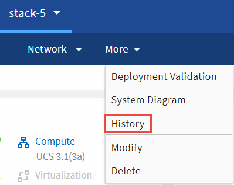

Note di rilascio
Note di rilascio
Monitoraggio dell’infrastruttura convergente
 Suggerisci modifiche
Suggerisci modifiche
Puoi monitorare la tua infrastruttura convergente rispondendo agli avvisi, rivedendo la cronologia delle modifiche e generando report che offrono una vista olistica di un’infrastruttura.
Revisione degli avvisi per le regole e gli avvisi non riusciti
Converged Systems Advisor monitora costantemente l’infrastruttura e genera avvisi e guasti per garantire che il sistema sia configurato e che sia in grado di eseguire le Best practice.
-
Accedere a. "Portale Converged Systems Advisor" E fare clic su regole.
La pagina regole visualizza un riepilogo di tutte le regole. Lo stato di ciascuna regola è Pass, Warning o Fail.
-
Fare clic sull’icona del filtro nella colonna Status (Stato) e selezionare Fail (non riuscito), Warning (Avviso) o Both (entrambi).

-
Per visualizzare i dettagli sulle singole regole, fare clic sulla freccia accanto alla colonna Status (Stato).

-
Seguire le istruzioni nella risoluzione per risolvere il problema.
Se necessario, esaminare la cronologia della configurazione per aiutare l’infrastruttura a risolvere il problema.
Lo stato delle regole indirizzate deve essere visualizzato come Pass dopo il successivo periodo di raccolta dell’agente.
Correzione delle regole non riuscite
Converged Systems Advisor può risolvere alcune regole di errore correggendo il problema sottostante dell’infrastruttura convergente.
-
È necessario disporre della licenza Premium.
-
Devi essere assegnato come proprietario dell’infrastruttura convergente.
-
Accedere a. "Portale Converged Systems Advisor" E fare clic su regole.
La pagina regole visualizza un riepilogo di tutte le regole. Lo stato di ciascuna regola è Pass, Warning o Fail.
-
Selezionare Filter rules that CAN be rimediated (regole filtro che è possibile correggere).
-
Espandere la regola che si desidera risolvere.
-
Fare clic su
 nell’angolo in alto a destra della regola espansa.
nell’angolo in alto a destra della regola espansa.Se l’icona è disattivata, l’agente non è in linea, non si dispone dei privilegi di proprietario o non si dispone di una licenza Premium.
-
Se necessario, inserire i valori immessi.
A seconda della regola non riuscita, alcuni valori di input sono necessari per risolvere il problema.
-
Se si desidera eseguire una raccolta di dati dopo il completamento della correzione, selezionare l’opzione Collect when Remediation Job completed (Raccogli al completamento del processo di correzione).
-
Fare clic su Esegui correzione.
-
Fare clic su Conferma.
-
Per visualizzare le azioni intraprese per risolvere le regole non riuscite, fare clic sull’icona Operations e selezionare Remediation Action.

Eliminazione delle regole non riuscite
Converged Systems Advisor consente di eliminare le regole in modo che non vengano visualizzate nella dashboard e non inviino più notifiche e-mail in caso di errore della regola.
Ad esempio, non è consigliabile attivare telnet, ma se si preferisce attivarlo, è possibile eliminare la regola.
Per configurare le notifiche, è necessario disporre della licenza Premium.
-
Dalla dashboard, fare clic su Rules (regole).
-
Trovare le regole che si stanno cercando filtrando il contenuto della tabella.
-
Selezionare una o più righe per le regole con stato Warning (Avviso) o Fail (errore), quindi fare clic sull’icona Alerts (Avvisi).

-
Selezionare una durata, quindi fare clic su Invia.

|
Se si desidera attivare gli avvisi, seguire la stessa procedura e selezionare fine soppressione. |
Converged Systems Advisor non notifica più la regola per la durata specificata e la regola non sarà più visibile nella dashboard.
Visualizzazione delle regole soppresse
È possibile visualizzare l’elenco delle regole che sono state soppresse e, se si desidera, selezionare per terminare l’eliminazione.
-
Fare clic sull’icona Impostazioni e selezionare regole soppresse.

-
Selezionare le regole sospese che si desidera visualizzare.
-
Fare clic sull’icona Alerts.
-
Selezionare End Suppression (fine eliminazione), quindi fare clic su Submit (Invia).
Gli avvisi vengono attivati per la regola selezionata e la regola viene visualizzata nella tabella regole e nella dashboard.
Analisi della cronologia di un’infrastruttura
Quando si riceve un avviso relativo a una regola non riuscita, è possibile visualizzare una cronologia delle modifiche nella configurazione per risolvere il problema.
-
Selezionare un’infrastruttura convergente.
-
Fare clic su Altro > Cronologia.

-
Fare clic su un giorno del calendario per visualizzare il numero di avvisi e errori identificati durante ciascuna raccolta di dati.
Il numero visualizzato per ogni giorno corrisponde al numero di volte in cui l’agente ha raccolto i dati. Ad esempio, se si mantiene l’intervallo di raccolta predefinito di 24 ore, viene visualizzata una raccolta al giorno. La seguente immagine mostra una singola raccolta il 27 del mese.

-
Per visualizzare ulteriori dettagli sui dati raccolti, fare clic su Vai a ci Dashboard per una raccolta.
-
Se necessario, visualizzare la cronologia per l’ultima volta in cui non sono stati identificati avvisi o errori.
Il confronto dei dati tra i due periodi di raccolta consente di identificare le modifiche apportate.
Generazione di report
Se si dispone di una licenza Premium, è possibile generare diversi tipi di report che forniscono dettagli sullo stato corrente dell’infrastruttura convergente: Un report di inventario, un report sullo stato di salute, un report di valutazione e altro ancora.
-
Fare clic su Report.
-
Selezionare un report e fare clic su generate (genera).
-
Scegliere le opzioni per il report:
-
Selezionare un’infrastruttura convergente.
-
Se si desidera, passare dalla raccolta di dati più recente a quella precedente.
-
Scegliere la modalità di visualizzazione del report: Nel browser, come PDF scaricato o via e-mail.

-
Converged Systems Advisor genera il report.
Monitoraggio dei contratti di supporto
È possibile aggiungere dettagli sui contratti di assistenza per ciascun dispositivo in una configurazione: Data di inizio, data di fine e ID del contratto. In questo modo è possibile tenere traccia dei dettagli in una posizione centrale, in modo da sapere quando rinnovare i contratti di supporto per ciascun dispositivo.
-
Fare clic su Select a ci (Seleziona ci) e selezionare l’infrastruttura convergente.
-
Nel widget Support Contract (Contratto di assistenza), fare clic sull’icona Edit contract (Modifica contratto).
-
Selezionare Data di inizio e Data di fine e inserire ID contratto.
-
Fare clic su Invia.
-
Ripetere la procedura per ciascun dispositivo nella configurazione.
Converged Systems Advisor ora visualizza i dettagli del contratto di supporto per ciascun dispositivo. È possibile visualizzare facilmente i dispositivi con contratti di supporto attivi e scaduti.